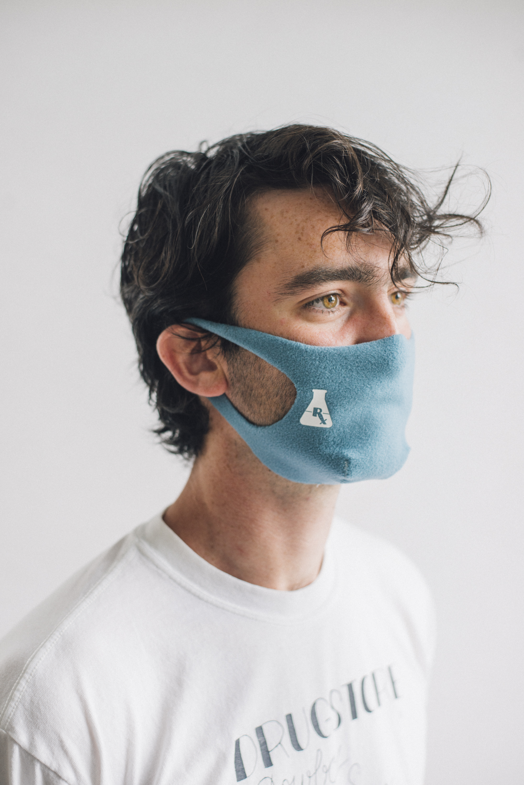
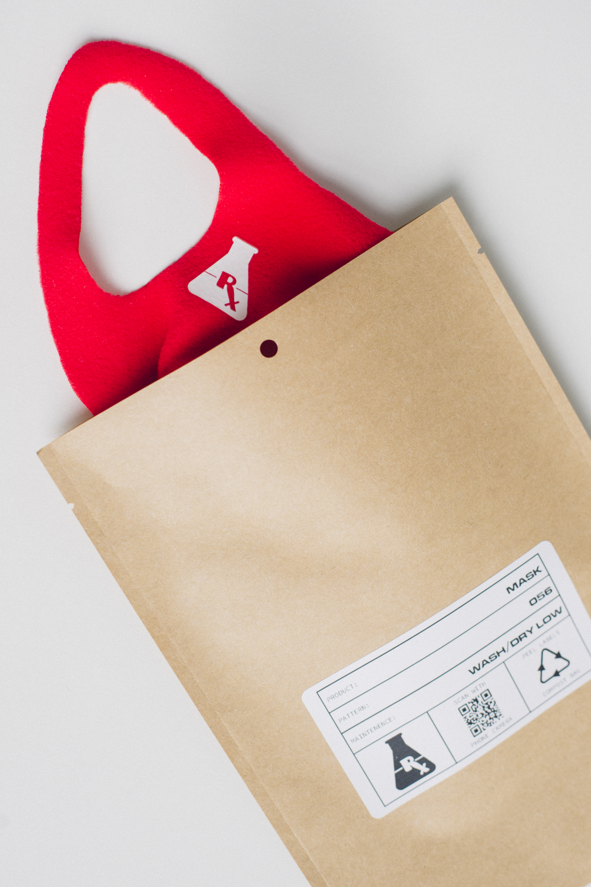

Multnomah Drug
At the beginning of 2020's mask shortage, I acted on recent research and conceptualized a technically superior mask to cotton that could be laser-cut and sewn for rapid production. With the help of PVS Graphics (lasercutting) and Settlemeiers (sewing), we were able to produce thousands of masks in a matter of weeks and distribute them to houseless individuals via Transition Projects street distribution.

The masks are 100% recycled hydrophobic polyester, and the packaging was 100% compostable and printed with an ink-less thermal printer.
